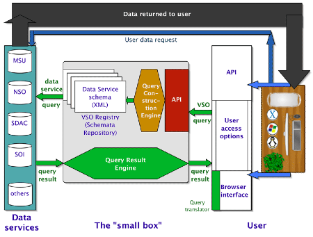

A Framework for Space and Solar Physics
Virtual Observatories
Results from a Community Workshop
sponsored by
NASA's Living With a Star Program
27-29 October 2004
Marriott Hotel, Greenbelt, MD
1 January 2005
Workshop organizers and focus
group leaders
R.
Bentley, MSSL
R.
Bogart, Stanford
A. Davis,
Caltech
N.
Hurlburt, LMSAL
J.
Mukherjee, SWRI
V.
Rezapkin, Aquilent
D. A. Roberts, GSFC
A. Szabo,
GSFC
M. Weiss,
APL
Table of Contents
Executive Summary
I. Why "Virtual Observatories"?
II. Definition,
Organizing Principles, and Purposes for Virtual Observatories
III. Current Activities as Starting Points
IV. Products, Services, and Resources
V. Overview of the Components of the Data Environment
VI. Basic Data Access and Services: Data Providers and VxOs
VII. Data Models and Registries
VIII. Services Beyond Finding and Accessing Data
IX. How Do We Know It Worked? (Metrics)
X. What Can We Do Now?
XI. Summary and Vision
Appendix: Block Diagrams of Some Existing or Proposed VOs.
Executive Summary
The new challenges in solar and space physics, including linking solar phenomena to human consequences as studied in NASA's Living With a Star program, will require unprecedented integration of data and models across many missions, data centers, agencies, and countries. Accomplishing this requires a coordinated effort to link data and service providers to scientific users through software that uses nearly universal language descriptions to give a uniform face to an underlying heterogeneous and distributed set of resources. Such three-part entities—front-end software linked to repositories and services through "gateways" or "brokers"—represent a generalization of the ideas behind the "virtual observatory" (VO) intended to give astronomers virtual access to all observations of the sky. This workshop, held in Greenbelt, MD on 27-29 October 2004, brought together nearly 100 space and solar physicists and technologists, along with Earth scientists and astronomers, to come to basic agreements on how to proceed to build a robust data environment for future space and solar physics research based on the virtual observatory paradigm. Some of the main ideas had been in the community by other names for over a decade, but new Internet connectivity, greater emphasis on global problems to be solved with multiple spacecraft and models, and increased support by agencies has brought us to a point where the need and means are clearer for realizing an integrated data environment.
The workshop consisted of a set of plenary talks (available on a link at http://lwsde.gsfc.nasa.gov, which also includes many presented posters and other background) that gave an overview of current efforts and issues, followed by 1-1/2 days of working groups and plenary sessions designed to clarify and elaborate the vision and plans. The above three-part VO structure was followed by the existing VOs, although the details differed. There are beginnings of integration of the current efforts, and the connections are becoming more direct. The workshop agreed on the need for agreement on at least a core of common "data model" terms, such as presented by SPASE and EGSO, although all agreed that specific communities, represented by "VxOs" ("x" being the community), would have some terms specific to their needs. Data models are much farther along in describing data products than services. The roles of the resource providers and the VOs were delineated at the workshop, with VxOs being mainly responsible for uniformity of access across providers and for higher level services and the providers for basic data quality and access, although the VO data environment should provide considerable flexibility in what tasks are performed by which parts of the system. It was agreed that a level of metadata management services, generally invisible to users, would be essential. Science services, such as format and coordinate translations, visualization, and higher-order queries, were seen as highly desirable but not part of the central core services which consisted of finding and accessing resources in uniform ways.
It was agreed that the current VO groups should continue to coordinate their efforts. In the short term this will be on an informal basis, but longer term there should be a coordinating group consisting of VO representatives (scientific and technical) and users from the scientific and community. Initially these may be agency specific groups, but interagency and international coordination, which is a natural outgrowth of much current work, will be needed and should continue to be part of workshops and other efforts. While the data environment is becoming established, data and service providers can be describing their resources in uniform data model terms and providing feedback to groups working on the data models; making data and services machine-accessible with APIs or other means as current resources allow; and linking to current VOs or making VxO alliances. In addition to continuing to coordinate their efforts, the VOs should seek community feedback on current VO interfaces and other issues.
I. Why "Virtual Observatories"?
The broad outlines of the disciplines of solar and space physics are now well established. The significant problems in these areas—which include the physics of fields, plasmas, energetic particles, dust, and gases from the interior of the Sun to the outer reaches of the heliosphere, as well as down to the surfaces of solar system bodies—frequently involve relating many different datasets with large data volumes. These data are located at sites distributed worldwide, stored in a variety of formats, and accessible through a wide variety of interfaces. Much of the data are now online, although significant datasets still reside offline on tapes or CDs and some are not produced on a regular basis. The preparation of even online data for a particular scientific study often poses a sufficient impediment that the study is not undertaken. Days or weeks may be spent reformatting or combining datasets, and broad exploratory studies can involve more work preparing data than in browsing for relationships. Models are even more difficult to incorporate in most cases, but they can be essential to an integrated view.
In short, success for Sun-Solar System Connection studies (to use the current NASA terminology) will involve an unprecedented integration of contrasting empirical data sets, as well as an integration of observations with models and simulations. Given the work already expended in making resources available, a further integration should be built on the current data systems such as those produced and maintained by national or other data centers and by many particular spacecraft or instrument-based facilities. The resulting data environment must include a sufficient knowledge of formats, spacecraft metadata, and models to allow a scientist to work with physical quantities rather than, say, CDF or FITS files from a specific satellite. Ultimately, users should be able to view simultaneously multiple data sets and/or models in 3-D along with panel plots and images or movies, treating all spacecraft or observatory data in a uniform manner. The ideal would be to have the data and other resources appear to be locally held and uniformly available to a set of applications that are easy to use and that could be linked to perform more complex analysis. Those familiar with applications such as IDL would be able to load data from distant sources transparently so they can use the tools they have developed.
There are a number of problems to be addressed to reach the above ideal, and a stepwise approach that allows continual upgrading will allow us to have benefits now while eventually arriving where we would like to be. The steps need a context, and this workshop was intended to produce general agreements on the overall architecture of the data environment that will allow us to proceed and will help funding agencies direct their resources efficiently. The workshop had a day of overview talks on the status of the more advanced projects followed by 1-1/2 days of focus group and plenary discussions of the issues. (The presentations and much other background material including links to many current efforts are on the Web; go to http://lwsde.gsfc.nasa.gov.) The results of the focus groups, as modified by the group as a whole, were summarized and unified into this report, which was then iterated with the participants and a much broader selection of the community. Over 100 people participated in the workshop representing many countries and agencies.
The idea for a unified space and solar physics data environment is not new, and was discussed in detail over a decade ago at a NASA-organized workshop at Rice University in 1993 that tried to define a Space Physics Data System (SPDS) (McGuire and Galiardi, 1993; see the links to documents on the LWS DE site). The Rice workshop concluded that the SPDS should be a distributed data system designed, developed, and operated by scientific users of space physics data that maximally uses existing facilities. The NASA Master Directory should indicate where all SSSC data reside and give an adequate description of the holdings to help researchers decide their relevance to their work. Metadata should include the instrument, satellite, format of the data, a timeline of instrument and satellite events, and the location of the ephemeris. The critical system functionalities identified for SPDS were: the delivery of self-documenting data; the existence of a matrix of translators between several standard formats; and a network-based capability for browsing and examining inventory records for the system's data holdings.
The effort to produce a SPDS did not generate enough community support and attendant funding to be fully realized. Since then there have been some efforts to revive the SPDS ideas, but the major change has been that the Internet and tools to use it efficiently have transformed the possibilities for such a system. Data centers have exploited this to unify many datasets and services in tightly coupled systems. These developments combined with the need to address broader science questions have led to many recent high-level calls for an integrated approach to the SSSC data environment. For example, the Sun-Earth Connection (SEC) Roadmap [Sun-Earth Connection Roadmap: http://sec.gsfc.nasa.gov/sec_roadmap.htm, Sept. 2002] states that "…a technology program is needed that develops the tools necessary for systematic and automatic access to large and distributed data sets and the ability to synthesize quite disparate data sets. To address all of these diverse requirements, early investments in information technology will be a high priority, in particular to promote the system understanding sought by LWS and STP missions." Similarly, a high priority Vitality Program was proposed by the Space Studies Board of the US National Academy of Sciences in "The Sun to Earth – and Beyond: A Decadal Research Strategy in Space and Solar Physics (2002)." They called it the Solar and Space Physics Information System, defined as a "multiagency program for integration of multiple data sets and models in a system accessible by the entire solar and space physics community." This was ranked above Guest Investigator, SEC Theory, and Targeted Research and Technology programs.
Another difference between the current situation and that in 1993 is that there are significant advances being made by a number of groups in providing the first steps along the path to an integrated data environment. NASA has funded a few major and many smaller efforts to work on these ideas. These efforts have coalesced around the idea of a "virtual observatory," a term initially coined by a group of astrophysicists to describe the idea of being able to examine any patch of sky using the collected observations in all wavelength ranges by connecting to the sources of these observations on the Internet. In the US this became the National Virtual Observatory (http://www.us-vo.org/), but the effort took root in many places and has grown into an International Virtual Observatory Alliance (http://www.ivoa.net/). A number of people seized the idea of uniting disparate observations from dispersed providers, thereby generalizing the term "Virtual Observatory" to apply not only to Astrophysics but also to Space and Solar Physics and to Earth Sciences as well (e.g., the ECHO project; http://www.echo.eos.nasa.gov/). The original meaning of the term will be realized in our community when the space and solar physics data sources and models are linked to 3-D visualization that will allow the user to see the fields, plasmas, and particles, whether measured remotely or in situ, evolve in the physical domain where they were measured and calculated. Thus we arrive at the present with a vision for Space and Solar Physics that involves a set of interrelated VOs to enable the next science advances in these fields.
II. Definition, Organizing Principles, and Purposes for Virtual Observatories
The above discussion leads to a definition of a Virtual Observatory (VO) as a suite of software applications on a set of computers that allows users to uniformly find, access, and use resources (data, software, document, and image products and services using these) from a collection of distributed product and service providers. A VO includes registries based on a metadata model, front-end applications, and connections to data providers.
A VO is a service that unites services and/or multiple data providers, with a "VxO" doing this for community "x." The set of such VO services should be made such that they can be linked to include other services, with the resulting data environment being flexible, extensible, and as simple as possible so that the overall system remains inexpensive and easily maintained. Each VO should be accessible not only to a browser application, but also to other VOs and applications through appropriately designed Application Programming Interfaces (APIs) or other means. (An API is a set of routines that can be used in other programs to simplify a set of tasks; in this case, typically, remote procedure calls using, for example, the Simple Open Access Protocol or SOAP.) Standards for the required protocols and descriptive languages should be motivated by utility and not by fiat. More generally, while too much duplication is wasteful, the experience of a number of groups has shown that top-down imposition of structure for such a diverse endeavor, however tempting, tends to result in systems that are not well-accepted, and that "market" forces should be allowed to determine the best directions for the efforts. In some cases this may involve community-based agreements on standards and architectures that enable the desired connectivity.
Coordination of efforts is essential and should come through frequent interchanges between groups, including through a coordinating group of representatives of the VOs and the user community. The funding agencies would exercise control through selection of competitive proposals for VOs and related services and organizing both coordinating and advisory working groups as they see the need. Initially these efforts would probably emphasize agencies in specific countries, but we foresee that an international organization will be needed, as has occurred in the astrophysical community. The electronic Geophysical Year (http://www.egy.org/) may help to provide some structure for this.
VOs should make “standard” scientific research much more efficient. If the new paradigm is successful, even the PI teams should be tempted to use VOs for looking at their own data. VOs, to be accepted, must improve on existing services (Mission and PI sites, CDAWeb—http://cdaweb.gsfc.nasa.gov/, etc.) by providing greater breadth and convenience such as by removing impediments imposed by the underlying format or coordinate system of a dataset. VOs will not replace the data centers and other providers, but will use them in new ways. Often specific provider sites or "community" VOs will offer some services that will not be accessible by higher level VOs, and this should be expected and encouraged.
VOs should also enable new, global problems to be solved. Being able to access diverse datasets and services should allow researchers to rapidly gain integrated views from the solar origin to the terrestrial effects of an event. Wide-ranging search capabilities will allow a user to find data related to any particular observation. Ultimately VOs and associated services should enable us to answer “higher-order” queries such as “Show me the data from cases where a large CME and its effects that was observed by SOHO was also observed in situ in the heliosphere, in the Earth's magnetotail, and in responses in the
magnetospheres and ionospheres of any planets.”
High-quality, well-documented, publicly available data and well-documented, easy-to-use tools to interpret them are the core of the data environment. Although this will not be the focus here, it is essential that there continue to be support for bringing previously unavailable products up to this level where there is a perceived need. Techniques for automated data reduction are essential, and could be encouraged through programs such as NASA's AISRP. An open-data policy has become expected at NASA (see http://lwsde.gsfc.nasa.gov/Rules_Revised20030327.html) and in some other areas, but is still not universal. We believe it is the experience of nearly all data providers that having a larger group use their data is good for the data and for the support of their efforts by funding agencies.
Equally important, but also not the present focus, is a long-term active archive plan that will insure the correct, independent use of data, software, and models after PI-team expertise is no longer available. This will be addressed, in part, through Project Data Management Plans for new missions, but legacy data will also be important, and the emerging idea in NASA for "Resident Archives" to keep data close to the science teams for some time after mission termination should help the overall process.
III. Current Activities as Starting Points
The discussion below will mention a number of currently funded activities that are working within the framework of VOs. Detailed descriptions of these can be found at the links from the LWS Data Environment site mentioned above. Here we provide a brief overview to give a sense of what is being done and to make the subsequent sections more easily understood.
The Virtual Solar Observatory (VSO; http://virtualsolar.org) has focused on delivering image data files from many observatories at different locations using a unified interface. They deliver FITS files from SOHO, Yohkoh, and a number of ground-based observatories. They have simple user interfaces and plans for others as well as the beginnings of APIs, and are developing easy ways for others to "join" the VSO. This VO is the original "small box" building block of a VxO –based data environment.
The Virtual Space Physics Observatory (VSPO; not a "VxO"—see http://vspo.gsfc.nasa.gov/) currently provides access to a broad range of space and solar physics data, models, plots, indices, and images from over 40 repositories and 35 observatories/spacecraft using the interfaces provided by the repositories (a "big, shallow box"). The registry uses the SPASE data model (see below), and the system is layered similarly to VSO. VSPO now allows file retrieval from some providers (making the "box" deeper) using SOAP and other interfaces, and it will use the VSO API to access solar databases.
The European Grid of Solar Observations (EGSO; http://www.egso.org/) is a grid-based data and service access system that has included more capabilities for event driven searches than the VO projects above. They have a number of prototype services (see http://www.egso.org/demo/) including a Query Builder, access to many Solar Event Catalogues, and a Solar Features Catalogue. They have spent considerable effort on a data model (available on their site) that includes space physics terms in addition to a detailed solar physics vocabulary.
The Collaborative Sun-Earth Connector (CoSEC; http://cosec.lmsal.com/) will unite services of all sorts; CoSEC is currently focused toward solar applications using SolarSoft—a mainly IDL-based library of analysis routines (http://www.lmsal.com/solarsoft/) —but the tools are general. A nice example of its use is the SolarSoft Latest Events web page (http://www.lmsal.com/solarsoft/last_events/) that links many real time sources of data and analysis routines to give a detailed view of the current state of the Sun and heliosphere.
The Virtual Heliospheric Observatory (VHO; http://vho.nasa.gov) is beginning to unite a number of distributed repositories for heliospheric data. They will use an (extended) SPASE data model and SOAP interfaces. They are working hard at assuring the data are well calibrated and complete for improved solar wind studies. As part of this, the ACE Science Center is developing direct machine access APIs.
Central to the success of the data environment is a uniform set of terminology to describe products and their sources. EGSO has been making major efforts in this area, and VSO has developed a simple data model for their needs. The SPASE (Space Physics Archive Search and Extract; http://www.igpp.ucla.edu/spase/) collaborative, consisting of scientists and software developers from a number of US and European institutions, has been focusing on formulating a data model that will unify other efforts. It is now funded by NASA to also use the data model in the context of a number of existing data repositories, and is working to develop a unified approach to the data environment. A working draft of the SPASE data model is available for comment (see http://www.igpp.ucla.edu/spase/data/model.pdf).
Data centers such as the National Space Science Data Center (NSSDC; http://nssdc.gsfc.nasa.gov/) and the related Space Physics Data Facility (SPDF; http://spdf.gsfc.nasa.gov/dev_services.html), NOAA National Geophysical Data Center (NGDC; http://spidr.ngdc.noaa.gov/spidr/index.html), and the French Centre de Données de la Physique des Plasma (CDPP; http://cdpp.cesr.fr/english/), as well as the Planetary Data System (PDS), have software in various stages of development for broadening access to their data. The SPDF, in particular, has produced SOAP interfaces to their online space physics data holdings (CDAWeb) and orbit information (SSCWeb), and the latter has an associated OrbitViewer tool (http://sscweb.gsfc.nasa.gov/tipsod/). Those interested in building VOs will also be interested in work in other sciences such as Astrophysics (e.g., http://www.ivoa.net, www.us-vo.org, www.astrogrid.org) and Earth Science (e.g., http://opendap.org, www.echo.eos.nasa.gov).
IV. Products, Services, and Resources
The idea of a "product" is frequently used in the context of VOs and other data systems. The Planetary Data System, CDAWeb, SPASE, VSPO, and most Earth Science data systems use this as a central idea, but it is not currently as central to VSO, and EGSO takes a more general view. Solar physics, in particular, has a long history of observations as individual investigations of a particular phenomenon rather than uniform time series of images, but with the advent of missions such as SOHO, Yohkoh, and SDO, the product idea is becoming more natural in these areas as well.
Products are sets of things produced that have common characteristics along with required metadata that allow the product to be useful. Many types of products are possible, but numerical data is a central type for VOs. It can sometimes be difficult to determine which sets of data should be considered an individual "product" of this type. The simplest idea, which works for the vast majority of cases, is to define a Numerical Data Product as a set of files (either "static," i.e., pre-made and resident on a disk or other medium, or "dynamic," i.e., made on-the-fly from an underlying set of files) that differ only in the time of the observations in them. Such a product would typically extend for the entire life of a mission. A set of FITS images of the solar disk in a particular wavelength from a particular observatory would be an example, as would a set of HDF files providing tables of in situ vector magnetic field measurements along with positions and time from a particular spacecraft at a specific time resolution. A data provider may offer the ability to retrieve subsets in time or in physical quantity (only the x-components, …), but the product is the complete set. For some dynamic products, more than one product could be based on an underlying set of files. An example would be that an instrument that measures particle distributions in space could be used to produce "moment" files, pitch-angle-distribution files, and full-distribution files, but these need not be mixed. (These sets could be made for all the measurements, resulting in three static products.) In general, the detailed specification of products can be left up to the providers.
The main utility of the product idea is that it provides entities that can be registered for finding and pointed to for access. Each provider can determine names for the products, and broader sets of product IDs can be made from these by VOs that desire them. The (extreme) alternative to identifying products is to refer to a particular file or set of files by a set of values of terms in a data model; this should always be possible, but it is then more difficult to keep track of what is available and how to access it. In this approach, aggregations of basic files ("granules") are formed only through the commonality of a set of metadata terms chosen. In contrast, the organization in terms of products can also make it easier to do iterative searches; one can find a product, and then subsets of it, rather than generating file lists as the only possible result. Having this higher level of organization helps in providing detailed availability information as well. One disadvantage of a product orientation is that it can take more work to produce cross-product aggregations such as which granules are associated with an event. In what follows, we will refer to products in the above sense, although the more flexible aggregations of granules linked by term values are also consistent with the discussion below; at times each case will be noted. In EGSO terms, "Catalogues" can keep track of either granules or products, depending on the provider.
In addition to numerical data, the types of products that are often distinguished include images (typically JPEGs or GIFs of numerical data for an image or of line plots), software (including tools for analyzing numerical data), models, event lists (or catalogues), and documents. Each of these can have a different set of descriptive terms, but there will be some characteristics that are shared between types.
We will take "service" to mean a procedure executed by a computer that can be called from remote machines and that will perform operations on products or the output of other services. This would include such things as converting file formats, transforming coordinates for a dataset, displaying a FITS image, and plotting the data in a generic CDF file. The distinction between products and services is not always clear in that, for example, delivering subsets of data or producing dynamic data products meet the definition of "service." This ambiguity need not be resolved, and some developers see all VO and data provider interfaces as services. In what follows, we will distinguish the basic finding and accessing of data from other services, in that the former two functions are essential to a VO. We will use the term "resources" to refer to products and services collectively. Note that software to perform the functions of a service may be available for a user to download and use locally; making this easy is also a natural function of VOs.
V. Overview of the Components of the VO Data Environment
Most people who have dealt with the problem of the architecture for an interrelated set of VOs have come to the same conclusion about the architecture for them. In simple terms, repositories ("active archives," "providers") are connected to user applications ("front-ends") through a middle layer (a "broker" or "gateway") that allows uniform queries and access to the resources due to their being registered in a common language (using a "data model"). This three-part structure can take many forms in detail, but the common elements are listed below. Subsequent sections detail further aspects of these components.
The major components of a VO environment are:
Web-based, machine/application-accessible (“queryable”) active archives of data from spacecraft or models. Three existing ways to make data accessible are (1) through a well-organized ftp site, (2) using extended http get or post as is done in OPeNDAP (an Earth science VO; http://opendap.org/), and (3) with a SOAP service, as is now implemented by CDAWeb. The SOAP methods allow more flexibility of access to the data provider services. The most important point is to have access to the repository resources through a means that allows applications (including web applications) to perform remote procedure calls.
Registries of products and services. These will provide a uniform description of products and services across the community or in a subcommunity, and will be based on a data model (a set of terms and their relationships that capture the essential concepts of a given domain) such as those of SPASE and EGSO. There will be a need for specialized terms for some particular subfields or datasets, but the attempt should be to have as much uniformity as possible. The SPASE and EGSO models start from basic descriptions of the sources and types of products and from fundamental physical quantities in an attempt to insure generality. The differences between the various models will be worked out through coordinated efforts.
Front-end applications. These represent the portals through which users access the data and services. The simplest are Web-browser-based extensions of existing repository-specific tools that allow the user to narrow a search for products based on values of keywords submitted through various Internet protocols such as SOAP. It will also be possible to have direct streaming of data into applications such as IDL, as is now done in some cases by SolarSoft and OPeNDAP, and by SDDAS (a data system based at SWRI; http://www.sddas.org/) as part of its design. The front end is what the users see, and thus is crucial to success.
Brokers (or "gateways") to connect the repositories to front ends using the information in the registries. Having this extra layer between the user and data or services makes it possible to give the user a uniform means of access. With easily Web-accessible data and good registries, it will be possible to have a number of these with varying scope (“VxOs”), some of which will use others to extend their reach. Brokers translate queries in Data Model terms into requests to specific repositories in the language of the repository. Each VxO or other VO should have an API or equivalent means to make it seem like a resource provider to users or other VOs.
Services that will allow VxOs to manage their metadata, and, for example, will allow users to rapidly and easily put data into useful form, no matter what the underlying format. Ideally, there will be generic software that can interpret a variety of formats and produce listings and plots (as in CDAWeb or SPIDR, for example, but generalized) as well as a library of routines that will provide value-added features for each data product (as is done by SolarSoft for many solar observations). Visualization software for data and models will also be very helpful. These services may be Web-enabled and chained, as done by CoSEC.
Higher-order search capabilities. Ultimately we would like to be able to pose questions such as “When was there a spacecraft in the magnetopause and gathering data when a CME was arriving?” One important approach to this type of problem is to provide uniform access to Event Catalogues (or Event Lists; EGSO is making considerable progress on this) that can include detailed data availability listings for a product as a special case. Other important aspects will be model-based spacecraft location determinations (as in SSCWeb), and the use of survey-level data (e.g., OMNI data) to find, for example, regions of low solar wind density by direct examination of the data. Again, these capabilities can be Web-service enabled such that intervals found from Event Catalogues can be passed to the brokers to find specific data.
VI. Basic Data Access and Services: Data Providers and VxOs
We see a fairly natural division between the roles of data providers and VxOs, although the nature of VOs is such that the boundaries are flexible. In particular, the major roles for the data providers should be:
- Acquire data and produce data products (static or dynamic).
- Preserve data in useable forms.
- Distribute data, and provide easy machine (API) and Internet browser access.
Support a communication mechanism – should support a standards-based messaging system (e.g., ftp, http, SOAP, XML)
- Produce, document, and make easily available metadata for product finding and detailed data granule content description. Ideally, maintain a catalogue of detailed data availability information.
- Assure the validity and quality of the data.
Document the validation process.
Provide quality information (flags).
Maintain careful versioning including the processing history of a product.
- Maintain an awareness of standards (such as community accepted data models), and adhere to them as needed.
- Provide software required to read and interpret the data; ideally the routines used by the PI science team should be available to all.
For their part, the VxOs should:
- Provide coordinated discovery and access to data and service resources for a specific scientific discipline
Identify relevant data sources and appropriate repositories.
Allow queries that yield data granules or pointers to them.
Provide a user interface to access resources both through an API (or equivalent machine access) and a web browser application.
Handle a wide range of provider types, as needed.
• Understand the data needs of its focus area:
Recruit potential new providers.
Provide support and "cookbooks" for easy incorporation of providers.
Help to assure high data quality and completeness of the product set.
Resolve issues of multiple versions of datasets.
• Provide documentation for metadata:
Set standards for metadata and query items
Assist providers, and review metadata.
Maintain a global knowledge of data availability.
Possibly maintain collection catalog metadata.
• Provide an API or other means for the VxO to appear to others as a single provider.
• Potentially provide value-added services (can be done by providers or elsewhere):
Data Subsetting
Averaging of data
Filtering
Data Merging
Format Conversion
• Provide access to event lists and ancillary data.
• Collect statistical information and community comments to assess success.
VxOs could vary considerably in their complexity. Some might want to physically aggregate data (e.g., ground magnetometer measurements could be brought to a common repository) and others would hold it in a more distributed way. A VxO might decide to collaborate with another such group for the actual provision of its data. Thus, a new VxO group could work with a VHO group to extend the VHO product registry to include their data providers rather than reinventing the broker software. The level of services delivered could vary considerably as well. Ultimately, it will be the selections of proposed ideas that determine the fabric of the data environment, although for success all groups should be committed to providing easily used access and services for the others.
VII. Data Models and Registries
Data models are essential if we are to find and use products across disciplines and missions without having to know a new set of search words and variable names for each case. That said, there are real differences between different subfields and instruments that make it difficult to have complete uniformity. An important issue is the extent to which it is possible to have such uniformity. One result of the workshop is to encourage the various groups working on data models to work more closely. At the highest level of description, there is considerable agreement between various data models on those aspects of a product (or granule) that are not dependent on its information content. These "elements" (or "classes" in ESGO terms) are very useful for finding resources, and include: the Observatory/Spacecraft responsible for the observations, the Instrument Name(s), the Data Provider (or "Repository" or "Archive") that holds and delivers the data, the Instrument or Observatory Region (in general terms, e.g., magnetosphere, ground-based), the Observed Region (same as Observatory Region for in situ measurements, but not for remote sensing observations), and the Time Span (either for a product or a granule). At this level there are a number of elements that typically would not be used for searching, but that are essential for use such as Contact information (person and/or group responsible for obtaining and preparing the data), File Format, Availability (online, on tapes, etc.), Access Rights (restricted in various ways or open), URL for data access, and Caveats for the use of the data. The categorization of such elements is not essential, in that they need not be hierarchically related to other elements and can stand on their own.
Beyond the above broad characterizations of products or basic collections of granules there are various levels of aggregation and description. To aid searches it can be useful to distinguish, for examples, types of measurements (field, plasma, particle distributions, dynamic spectra, etc.). Event and feature catalogues may be regarded as types of products that contain metadata about the times of occurrence of specific features (bow shock crossings, CMEs, active regions, …) with pointers to datasets and products that are relevant to these. At the lowest level, it is possible to document every granule in a product with its corresponding metadata. Such detailed catalogues, if well indexed, could aid in determining product availability and using specific files. The metadata about the content of granules may be relatively simple, giving a product-wide indication of what was measured ("full-disk images of the Sun in H-alpha"), or it may involve identifying all the variables ("columns") in the files of a product including the quantity represented (density, energy flux, …) for a particular entity (photon, magnetic field, electron, …), with units and perhaps the typical graph label for each. How the metadata terms used for each of these levels of description will be organized and used in searches and retrieval were points of considerable debate; this issue need not be resolved universally, and different VOs may make different implementation decisions based on the services they support.
As with many aspects of the data environment envisioned here, where various metadata are registered (entered into lookup tables) will be flexible. As mentioned above, in some cases granule metadata will reside with the data providers, while in others at least some version of it will be held more centrally. However, the experience of some groups likely implies that continually querying all providers for what products they have is inefficient, and some degree of centralization is helpful. VSPO is centralizing metadata from a very broad range of providers in what might be called a "product clearinghouse"; experience will tell what is gained and lost with this level of integration. Depending on the specific architecture of a VxO, it might have more than one registry, for example, one for search, another for access, and another for services. Updates of registries can be made available to other groups either through the sending of metadata by the registry service or through the querying of that service, or both.
Two areas have yet to receive much work, namely metadata for services and for models. Here "models" is taken to mean either physics-based or empirically based predictive schemes (equations or computer programs based on equations or empirical input) that are intended to provide some level of understanding of a set of phenomena. If the set of models and services remains fairly small, then finding them will not be a major problem. Some of the terms used for numerical data will be appropriate, such as the terms for physical domains and providers, but we need to have more experience with what people will want to be able to generate the right metadata for categorizing models and services. Similarly, event catalogues, while they are becoming more numerous and useful, do not have agreed upon formats or metadata.
VIII. Services Beyond Finding and Accessing Data
Virtual Observatories can be viewed as a simple case of a more elaborate computing environment. In this context they consist of three components: A set of well-defined services or tasks; a sequence, or workflow, for executing those tasks, and a manager for the user to interact with both. In the VO case, the minimal set of services are locating and delivering data for the user from a set of data sources, and the workflow is a simple three-step process: find, review, and deliver. Several of the VOs are considering more complex sets of services with correspondingly more complex workflows. There have also been discussions of incorporating third-party services. Since VOs are still in development, we do not yet know what the best combination of services and workflows will be, so we should consider the VO model in the more general environment to assure that it can adapt and evolve towards an optimal solution.
We will address two questions: what sort of services will be needed, and what environment should be established to encourage their development and adoption by the space science community? As with the VOs themselves, a marketplace approach should be used as much as possible to determine the types of services.
As for the architecture, there must be some agreed standards so that developers and users can easily share their services. The architecture should include middleware for services such as that being developed by the CoSEC project. It should use existing technologies and tools when it is possible and when it reduces cost and helps to insure compatibility with future standards. Grid and web-services technologies and other evolving infrastructure tools should be adopted as appropriate. Service applications could be downloaded or repository provided (e.g., graphics and subsetting), in addition to being web-service accessible (e.g., SolarSoft via CoSEC), but in all cases, they ideally should be advertised in conjunction with the resources they use.
The coordination and facilitation of services, tools and people will require the maintenance of an advisory group, preferably a grassroots working group or user forum. It would coordinate service development, review emerging tools and standards and report their progress to the appropriate funding agencies.
Several services are natural candidates for inclusion. Some involve infrastructure, which would be largely invisible to science users but could be essential to the overall operation of the VO system; others are things that scientists would incorporate into their own workflows. In what follows, the infrastructure services are further sorted to identify those that were thought to be critical to the overall success of the VO services, those that would be important to its adoption by the community and its growth, and those that would be desirable if funding and technology permits.
Critical Infrastructure Services
· Publishing/registering service for datasets and services
· Metadata management
Registration
Browsing
Updating
Query
Important Infrastructure Services
· Session/Persistence services, i.e. user history/logs
· Data transport services, i.e. multiple file transfer
· Metadata services
Validation
Discovery
Desirable Infrastructure Services
· Display
· Metadata translation services
· Authentication services
· Authorization services
· Monitoring service
· Versioning service (version of the service itself)
· Scheduling and resource allocation services
· Directory ("phonebook") of services
· Workflow services
· Interface builder/configuration services for interfaces to portals
· Groupware services to enable collaboration
Science Services
· File format conversions
· Coordinate transformations
· Software for visualization of datasets
· Software library for basic analysis
· Data readers
· Metadata services
Extraction
Aggregation
Annotation
- Aggregation
- Combined aggregation and visualization of datasets
- Complex/content based interdependent services
- Modeling and data assimilation services ("on demand" models)
- Knowledge discovery (e.g. data mining)
- Real-time forecasting and alert service for events and observatory status
- Science and mission planning
IX. How Do We Know It Worked? (Metrics)
If the VO development is to be "market driven," we have to be able to measure what the users think of the various efforts. The simplest measure is "web hits," but this does little to measure true interest and utility. The ultimate measure of success is that the improvements in the data environment contribute substantially to new scientific results, and especially to fundamental advances. Measuring this can be difficult depending on the degree to which users acknowledge and document in publications the utility of the tools. We conclude that it is primarily up to each group to propose and carry out a plan for documenting utility. This can include surveys, literature searches, web form feedback, and gathering testimonials. (One test, proposed only half in jest, it to see how much e-mail is generated by turning a given service off for a day.) There will never be a fully objective way to measure user interest, but it should not be difficult to demonstrate the major successes.
X. What Can We Do Now?
There are some funded efforts in the community, but others who want to "join" or contribute can be doing some things now based on even small existing resources. The involvement of data providers is key to progress at this point. Some of the things they can do are:
- Find a VxO group to join, or form one in anticipation of calls for proposals.
- Investigate tools and standards based on existing VOs and related work.
- Try describing data holdings with the current SPASE/EGSO/VSO metadata standards and provide feedback to these groups.
- Understand your own current web access method and work with others to determine how to use its structure to make your data and services machine accessible.
- Work with an existing VO (e.g., VSO, VSPO, VHO, EGSO, VGMO—http://maggy.engin.umich.edu/mist/vgmo.html) to make your products and services more available through an integrated access means.
- Encourage unification of like groups and propose together. Relatively small funding can sometimes achieve much.
- Make analysis software more readily available to encourage data use and generalization of tools.
Of course, existing VO groups should continue to talk to each other and to work toward evolving useful standards for metadata and protocols. It will be especially important for those working on data models to rapidly achieve some level of closure so that the community has a solid basis for proceeding. The funded VO groups are developing APIs and "cookbooks" for joining with their efforts, and are increasingly reaching out to the community for comments and criticism. We would especially encourage creative approaches to user interfaces, as these are crucial to utility. We hope that the space and solar physics communities will try the new tools and let the developers know what works and what needs changing. New ideas, even when good ones, take time to be accepted and to show their full potential. We can also hope that as we begin to show success that funding agencies will increasingly see the need for support for both development and maintenance of the new data environment.
XI. Summary and Vision
We believe the Virtual Observatory approach to the space and solar physics data environment that is proposed here will satisfy the need for finding, accessing, and using solar and space physics data that is expressed in many reports in a way that can be easily extended as data providers add their services and that will scale well with increasing use. The community agrees on the outlines of the basic architecture of what is needed, and it now becomes a matter of bringing existing and proposed VOs and services to a level of utility where we can see what works best. The workshop endorsed the idea of having subfields organize their data and make them available through VxOs that can communicate with other VOs using a common language and communication protocol as much as possible. How the subfields are organized would be determined by the community and the proposals they put forward.
Ten years from now, we would like to have a data environment in which sharing and trading of resources between communities is commonplace. Some resources such as, perhaps, storage and various kinds of processing may be outsourced to specialty industrial or other group suppliers on a highly interconnected Grid. Many more operations will be automated, including aspects of data processing, registry updating, format translation, and other "mundane" tasks. Investigators should spend very little time finding and preparing resources, leaving most of their time available to determining relationships between and mechanisms for the fundamental phenomena we wish to study. Enabling tools should become more practical when, for example, Grid software is packaged as standard within Linux, Windows, etc., and integrated into IDL and other applications. We believe that the idea of Virtual Observatories will provide the framework for this vision to be realized.
Appendix: Block Diagrams of Some Existing or Proposed VOs (see http://lwsde.gsfc.nasa.gov for complete talks and posters.)
